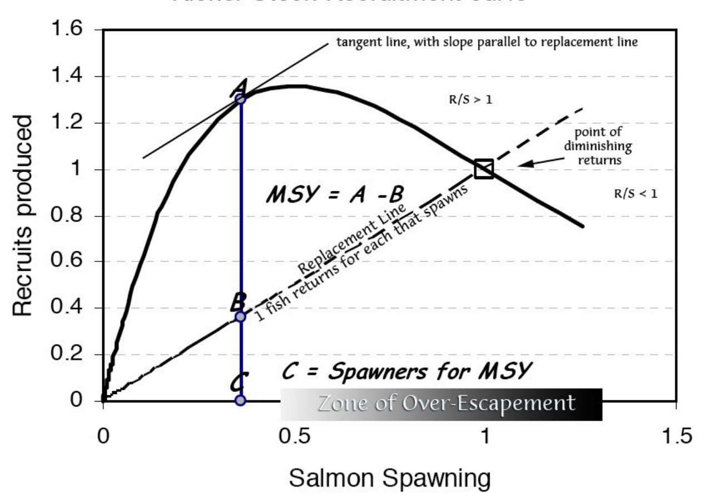
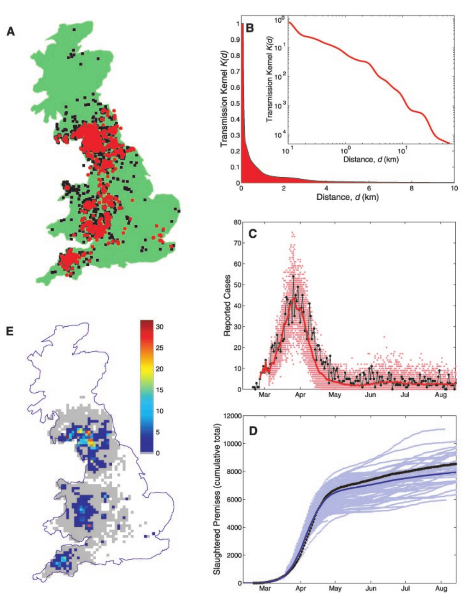
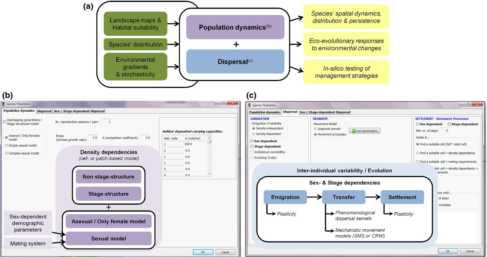
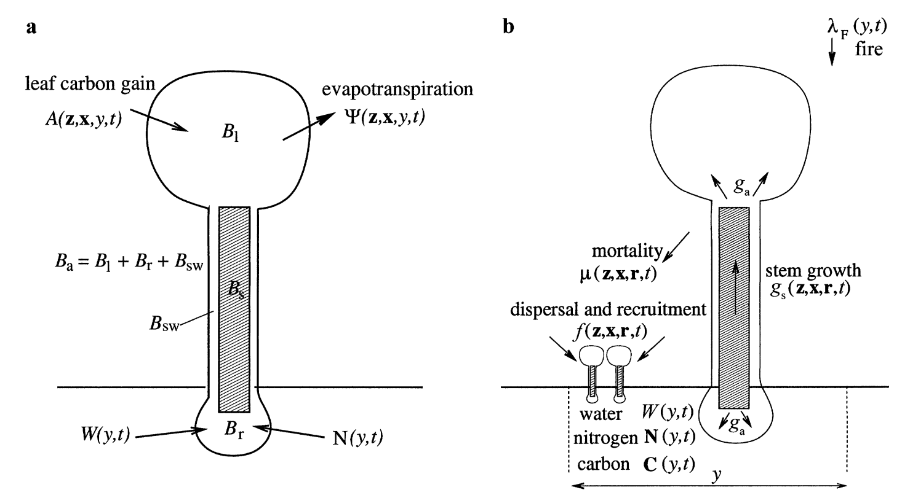
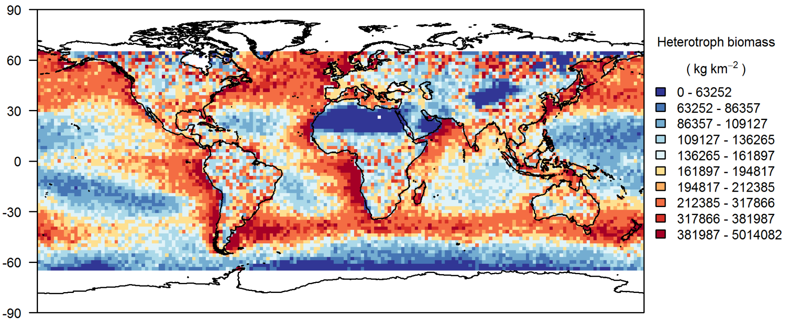
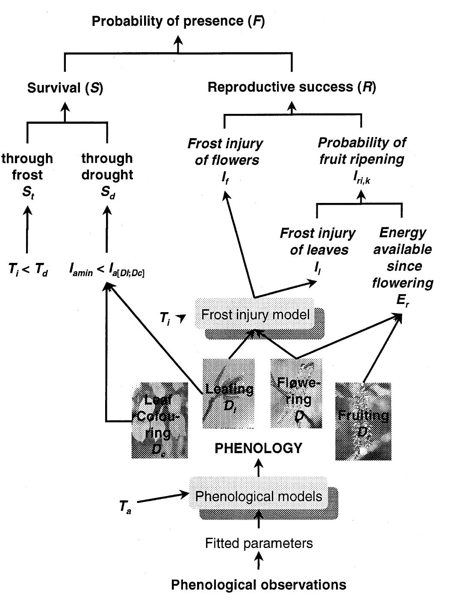
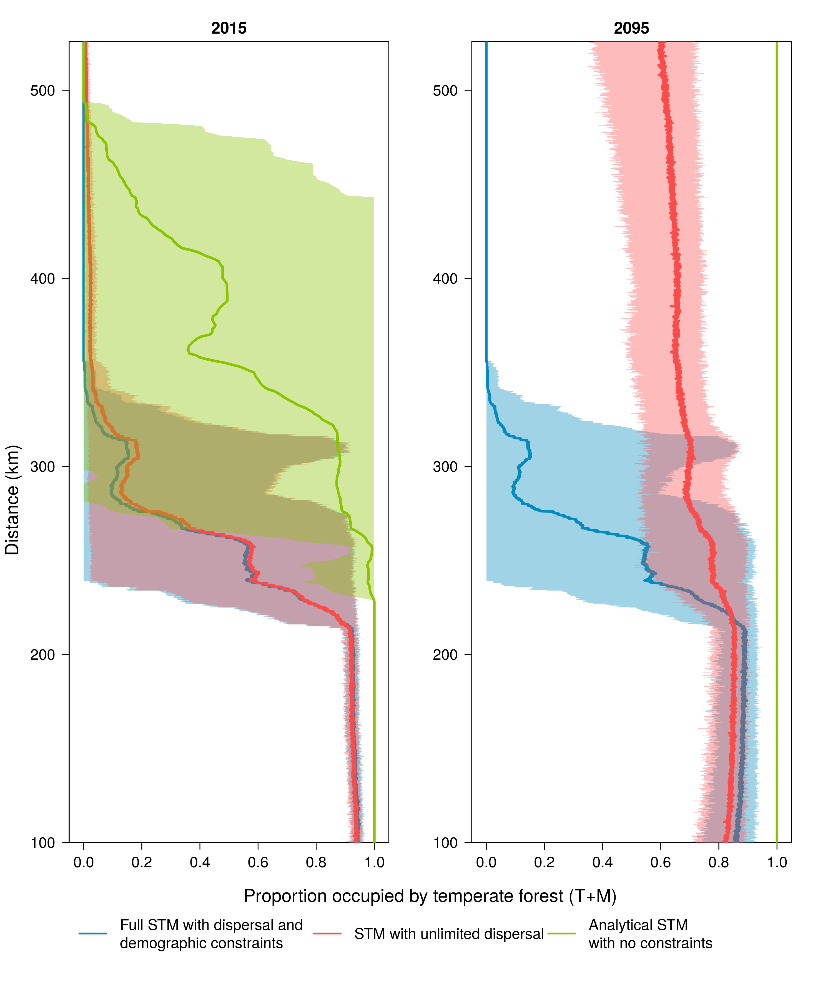
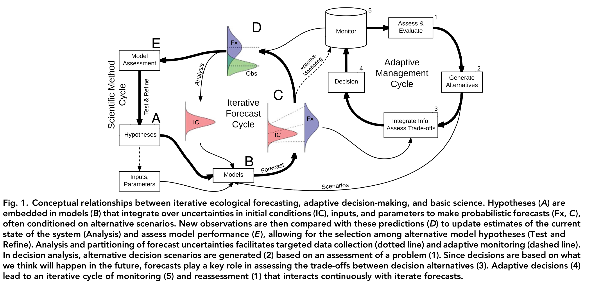

Give an overview of the diversity of techniques and approaches
Day 1. Models overview
Dominique Gravel
Laboratoire d'écologie intégrative
Objective
Phenomenological models
- Reproduce empirical relationships using different statistical models
- Good at interpolation, bad at extrapolation
 Worm et al. 2006. Science.
Worm et al. 2006. Science.
Differential equations
- Continuous time
- Continuous variable
- Easy to analyze, with multiple tools
- Deterministic
- Often derived from theory
- May be hard to parameterize
- May be subject to numerical errors
 MacArthur and Wilson. 1963. Evolution.
MacArthur and Wilson. 1963. Evolution.
Partial differential equations
- Same as ODEs but with several dimensions
- Much harder to solve analytically and numerically
 Strigul et al. 2008. Eco. Monogr.
Strigul et al. 2008. Eco. Monogr.
Difference equations
- Similar to ODEs but discrete time
- Easier to fit to empirical data
- Easier to solve numerically

\(N_{t+1}= aN_t e^{-N_t/K}\)
Markov chain
- Stochastic process
- Transition matrix
- Discrete time, discrete states
- No time lag
- Easy to fit to empirical data
- Several tools to analyze
- Traditional in forest ecology
 Brisson et al. 1994. Ecoscience
Brisson et al. 1994. Ecoscience
Diffusion models
- Partial differential equations
- Deterministic
- Random movement of particules (Brownian motion)
- Challenging analytically (but doable for some models)
 Kellam. 1951. Ecology
Kellam. 1951. Ecology
Metapopulation
- Spatial dynamics in discrete patches
- Continuous/discrete time
- Can be conditional on the environment
- Well suited for empirical analysis
- Used for conservation of endangered populations and for conservation area planning

Epidemiology
- Similar structure to metapop
- SIR, SIRS etc...
- Counts infected individuals instead of virus particules
- Seasonal dynamics
- Parameterized from field data
- Applied to forest ecosystems
 Keeling et al. 2001. Science.
Leslie matrices
- Structured populations
- Transition among discrete states
- Deal with rates and probabilities
- Density dependence
- Used to evaluate intrinsic growth rate and run PVA

Integro projection models
- Continuous version of the Leslie matrix
- Explicitly consider variability among transitions with a kernel
- Developed for data analysis
- May be technically challenging
- Hard to introduce feedbacks
- May include evolutionary dynamics

Cellular automaton
- Simplest spatial model
- Simulation based only
- Self-organization
- Could be deterministic or stochastic
- Easy to couple with other types of models
- Mean-field behaviour can be approximated with differential equations
- Turing complete (can perform any calculation that any other programmable computer can)!

Cellular automaton
 Jonathan McCabe
Jonathan McCabe
Ecosystem fluxes
- Tradition in ecosystem ecology
- Ecopath developed for fisheries
- Usually static, can be transformed into ODEs
- Heavy to parameterize
- Often approximated with allometries
- Problem of balancing fluxes
 Legagneux et al. 2012. Ecology
Legagneux et al. 2012. Ecology
Individual based models
- Infinite possibilities
- Realistic but hardly tractable
- Heavy parameterization
- Error propagation
 Bocedi et al. 2014. Meth. Ecol. Evol.
Forest gap models
- Realistic for uneven age forests
- Rich evolutionary history
- Based on succession or individual tree performance
- Heavy parameterization, often obscur
- Some are spatially explicit
 Beaudet et al. 2002. For. Ecol. Manag.
Beaudet et al. 2002. For. Ecol. Manag.
Food web models
- Often using ODEs
- Size-based parameterization
- None is validated at the food web level
- Recent addition of temperature dependence
- Used mostly for theory
 Cohen et al. 2003. PNAS
Cohen et al. 2003. PNAS
Dynamic Global Vegetation Model
- First principles in plant physiology, biochemistry and hydrology
- For very large areas (regions to continents)
- Incorporated into dynamic climate-vegetation modeling
- Plant functional groups
- No range dynamics
 Moorcroft et al. 2001. Eco. Monogr.
Global Ecosystem Model
- Madingley
- First principles for autotrophs and heterotrophs
- Marine & terrestrial
- Trophic interactions
- Temperature
- Spatial movement
- Monthly time resolution
 Harfoot et al. 2014. PLOS Biol.
Species Distribution Models
- Easy to apply & very popular
- Various statistical methods
- Handle different types of data
- Can account for spatial autocorrelation
- Several limitations
 McKenney et al. 2007. Bioscience.
McKenney et al. 2007. Bioscience.
Phenological models
- Hypothesis that phenology constrains ranges
- Developed for trees
- Successful and better at extrapolation than SDMs
 Chuine & Beaubien. 2001. Ecol. Lett.
Species extinction
- Based on point pattern process
- Inferrence of extinction date
- Use observation data
- Account for various data quality
 Gotelli et al. 2012. Cons. Biol.
Gotelli et al. 2012. Cons. Biol.
Other types
- Species Area Relationship (SAR)
- Species Abundance Distribution (SAD)
- Animal movement
- Dose-response
- [...]
How to pick the appropriate approach ?
Ten-steps guide to ecological modeling
Example

1. Precisely define the objectives & needs
- Solve some of the limitations of SDMs (dispersal limitations, demography, distribution in equilibrium with current climate)
- Evaluate the model with data
- Test some intuition about the drivers of species ranges
2. Use theory to justify assumptions and manage complexity

3. Make sure of mathematical rigor
Standard metapopluation theory :
\(\frac{dp(E)}{dt}=c(E)p(E)(1-p(e)) - e(E)p(E)\)
But tree demography in temperate forests is seasonal.
Tranformed the model into two states markov chain.
Often, the problem is lack of or inappropriate units.
4. Proper interpretation of the model, limits and uncertainty
- Bayesian analysis to fully document uncertainty in parameter estimates
- Posterior distribution of range maps to investigate error propagation
- Use theoretical tools to support the interpretation
5. Debug the code AND the model
- Simplicity of the theoretical model made it easy to solve
- Challenges with the bayesian implementation (JAGS, Stan, custom sampler in C++)
- Often the codes work, but it does not yields appropriate results
6. Code properly and for others
- Group of 4 working on parameterization
- All were trained with system version control
- Hundreds of parameter files exchanged
- At the end, not sure if model was parameterized with 1 or 5 yr time steps ...

7. Keep a journal of model development and tests
- Standard practice in biology labs to have a log book
- Tools to do it with code
- Comment, comment and comment ....
8. Run virtual experiments

9. Model validation & updating
In Global Change Biology, we generally like to see modelling studies to be supported by strong tests against observed data. Otherwise, we are left with the concern that model results may be just modelling artifacts that may not correspond to reality. In particular, your claim is hard to accept that species movements will be restricted to a few hundred meters over 100 years through dispersal limitations. While the other extreme of unlimited dispersal is clearly also not correct, the true movement of species will probably lie between these extremes as studies of changes in species distributions over recent times have confirmed.
10. Have in mind illustration of the results

Uncertainty
Parameters

Uncertainty
Error propagation

Uncertainty
Structural

How to control for uncertainty
The modeling loop
